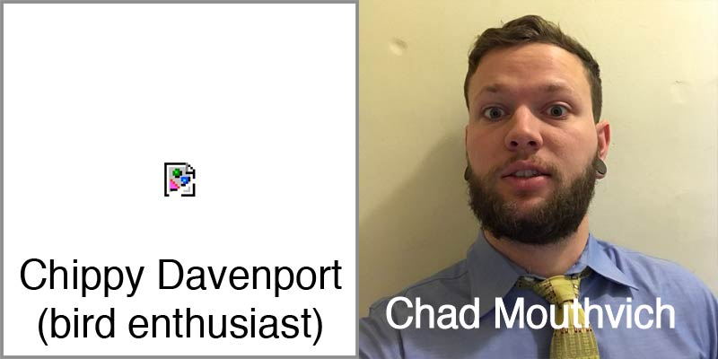

Chippy
Chippy Davenport, bird enthusiast, was born and raised in beautiful Butte Montana. The son of a schoolteacher and emergency avian vet, Chippy was raised with a strong appreciation for local history and frequently visited Butte's mining museum in his tender years. In addition to his passion for Montana history, Chippy gained an abiding love for exotic birds as a result of constant exposure to his mother's veterinary practice. In 2012, Chippy graduated from the University of Montana with honors, double majoring in biology (with many magical hours spent at U of M's bird ecology lab!!!) and computer science. Following a brush with death involving a flock of angry rainbow lorikeets, Chippy gave up ornithology (at least professionally!) and moved to the Bay Area to pursue a career in his second chosen discipline. Chippy hopes that Guzcoin will be the "next big thing" and put Butte back on the map, or at least surpass the city's massive, woefully mismanaged superfund site (The Berkeley Pit!) as the thing that puts Butte on the map!!!
Chad Mouthvich
Chad Mouthvich is the son of Russian immigrants who, only months before the collapse of the Soviet Union, moved to the United States to pursue their dreams of capitalist success. Chad has lived in San Francisco for several years now and is "very involved" with the tech community. He is a fan of kiteboarding, Ayn Rand and works as a vape juice sommelier consultant for several high profile restaurants.
The Guz
The Guz is the chocolate shotgun that makes the magic happen.